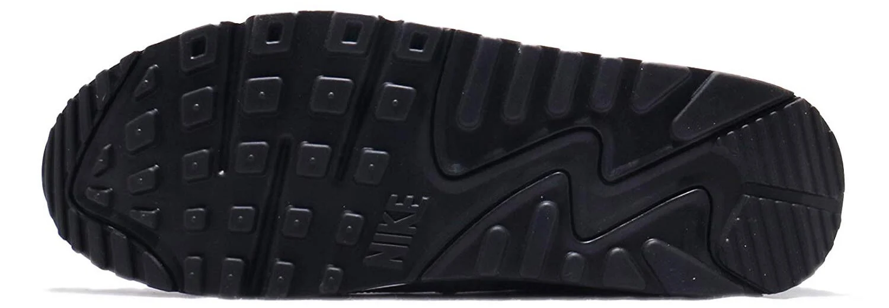
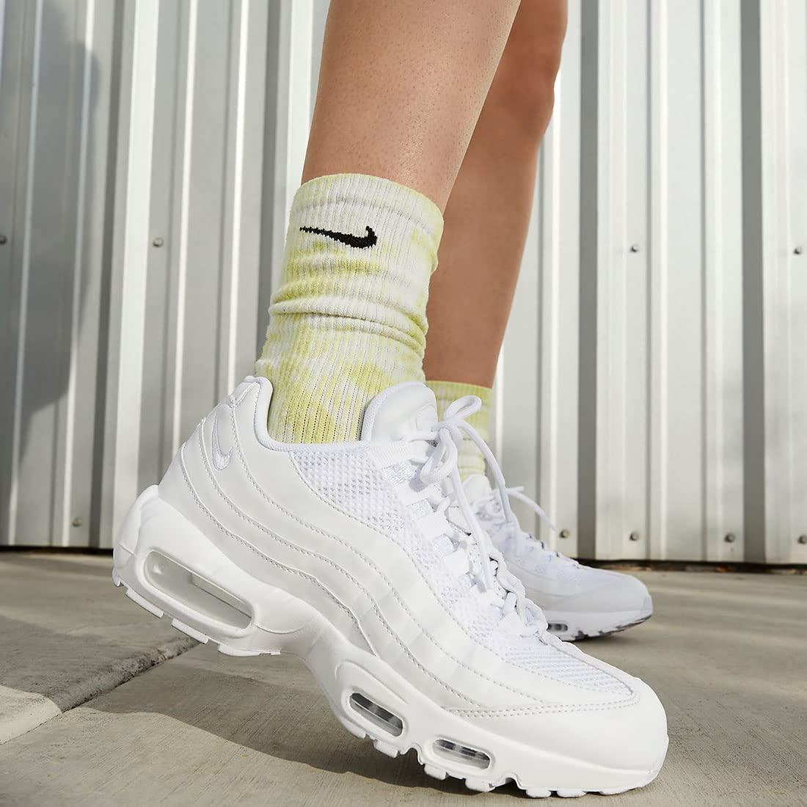

NIKE Air Max
FEATURE & LINE UP
FEATURE
-
エアを搭載した抜群の履き心地
エアーがソール部分に搭載されているため、抜群のクッション性を実現。ビジブルエアと呼ばれる“エアが側面から見える”目新しさも相まって、ハイテクスニーカーのムーブメントを世に巻き起こしました。
 -
豊富なカラーバリエーション
カラーやデザインのバリエーションが充実しています。白・黒・赤といった定番カラーはもちろん、ネイビー・イエロー・ピンクなど。スニーカーには珍しいカラーも豊富に取り揃えています。
-
長時間履いても疲れにくい、驚きの軽量感
「エアマックス」に一度足を通せば、その軽さに驚くはず。改良を重ねた結果、長時間履いても疲れにくい軽さを実現。クッション性も相まって、極上の履き心地。

LINE UP
NIKE AIR MAX90
①「TPUパーツで強調された第3世代ビジブルエア」
エアマックスシリーズの心臓部であるビジブルエア。エアマックス90では、旧モデルよりも大きいビジブルエアを採用。そのビジブルエアをTPUパーツで覆うことで強調しているのがこのモデル最大の特徴。
②「バランスの取れた都会的なシルエット」
スマートなシルエットを採用することで、現代でも通用する都会的な印象を演出。ミッドソールは、ダッドスニーカーほど分厚くはなく、それでいて優れたクッション性を実現するほどよい厚み。
NIKE AIR MAX95
①「前足部やヒールにまで設けられたビジブルエア」
初代のモデルから進化を遂げたビジブルエア。注目すべき点が前足部にもエアをいれたこと。これにより、ミッドソールの大部分がビジブルエアとなった。
②「機能性とデザイン性を兼ね備えるアウトソール」
切れ込みを入れたかのようなデザインの窓には、ナイキエアのロゴマークや空気圧(PSI)がある。土踏まず部分を大きく絞り込ませたシェイプも美しい。緻密に計算されたトレッドパターンで、ランニングシューズとしての機能性も果たす。
NIKE AIR MAX97
①「圧倒的な存在感のフルレングス・ビジブルエア」
初代モデルはヒール側の一部のみだったビジブルエアだが、エアマックス97ではミッドソールのほぼ全面に搭載。広い範囲で搭載された「フルレングス・ビジブルエア」が、クッショニングをサポート。足に優しいクッション性で歩きやすさを実現。
②「機能性を意識したアウトソール」
今作ではランニングシューズらしいグリップ力重視のデザインに。前足部側とヒール側でトレッドパターンが異なり、安定した歩行を実現。